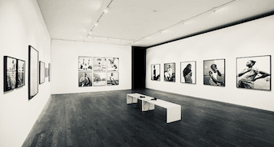

Home
Introduction
Selected Works
Fine Art
Exhibitions
Contact

21st Jan - 3rd March '22
Saatchi Gallery, London
"People of this World"
23rd March '22
Royal Geographical Society, London
"Life Through The Shutter"
4th April - 20th May '22
Les Jardins Saint Martin, Monaco
"One planet, one chance"